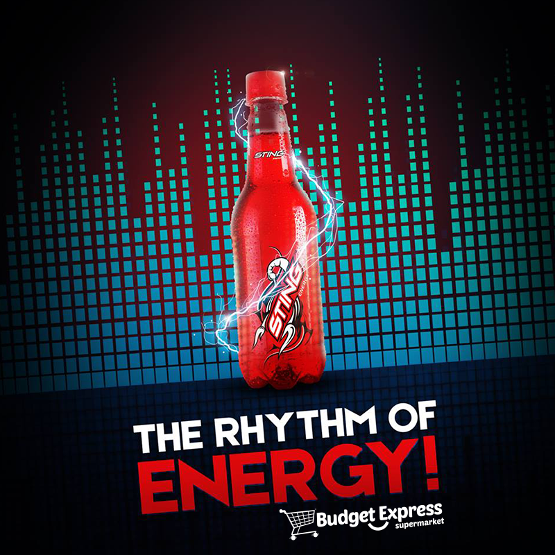
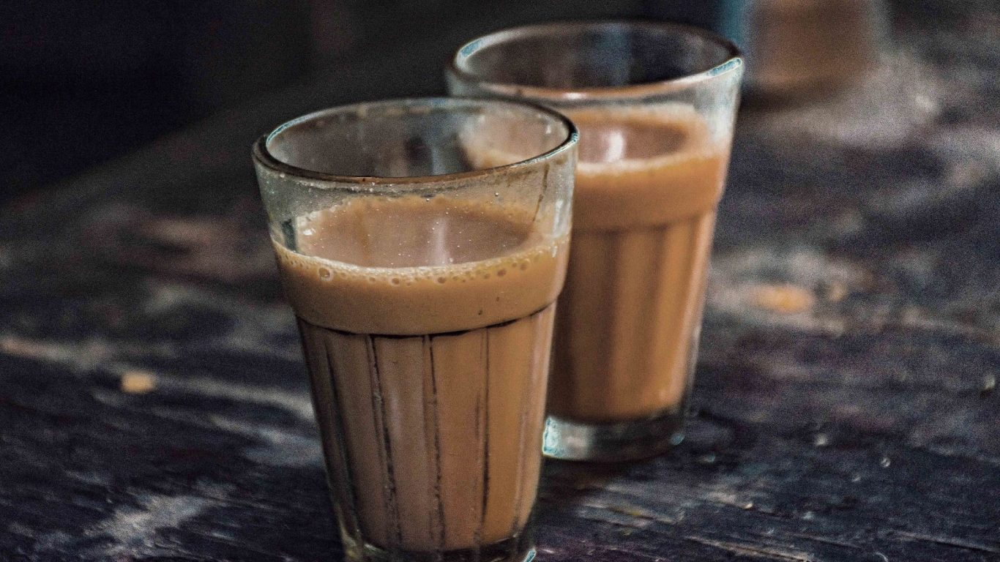

Near Block A, CCET(DG), Sector 26
It is an energy drink with amazingly refreshing taste. It contains caffeine, tourine & B-vitamins - that stimulates the mind and energizes the body.Willing to give a kick start to your day? Keep aside all your mainstream drinks and opt for Sting energy drink.experience the kind of mind freshness, increasing energy and mental alertness like never before. This energy drink have some legitimate stimulants helpful for a fresh and active start to your day with taste you would never forget.
Recommendation: Recomended for energy boost
Near Block A, CCET(DG), Sector 26
We all know there,s nothing better than a hot tea for a tea lover . I usually drink tea in morning with friends while we spend some quality time .With a packet of biscuit or prantha spending time with friends is best.
Recommendation: chai + aloo ka prantha
Near Block A, CCET(DG), Sector 26
Sprite is a lemon-lime flavored soft drink with a crisp, clean taste that gives you the ultimate cut-through refreshment.Just Drink it with doritos when you want something light and want to vibe with your friends.
Recommendation: Sprite with doritos